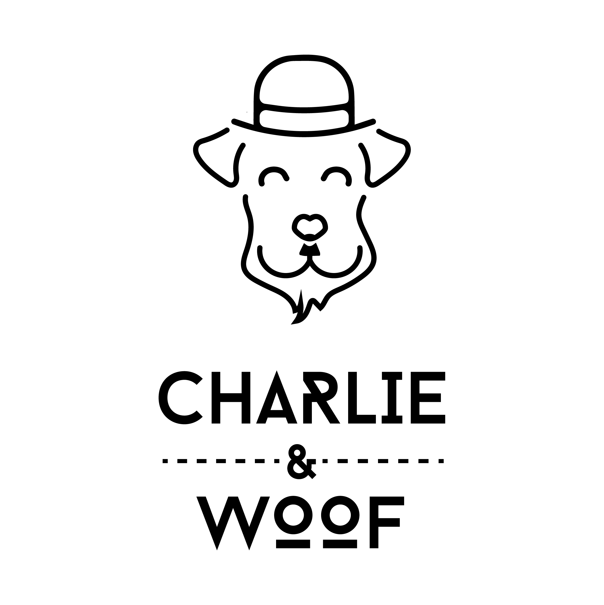

<!-- splash screen -->
<div #splashScreen class="m-splash-screen">
	<!--  -->
	
	<!--here we will have circle progress bar-->
	<mat-spinner diameter="40"></mat-spinner>
</div>


<router-outlet></router-outlet>